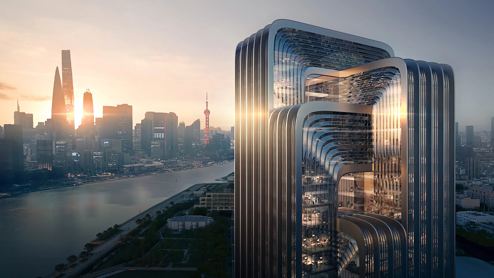

Specialized Construction needs require a specialized
contractor.
Peluso Construction, Inc. specializes in medical sensitive areas,
manufacturing clean rooms and data processing centers. We have
experience in the following areas:
| General Services | Specialized Areas | ||
|---|---|---|---|
| General Contracting | Project Management | Design and Construction | Additions/Renovations |
| Biotechnology Manufacturing Clean Rooms |
CT and PET Scan Facilities | Data Processing and Storage Facilities |
Linear Accelerators MRI Trailers & Magnets Radiology Suites |
Peluso Construction has worked with clients across Massachusetts since 1985. Below are some of our current clients:
Located in Needham, MA, BIDMC is a teaching hospital of Harvard Medical School.
Harvard Vanguard Medical Associates is a non-profit, multi-specialty medical group practice providing care to almost 495,000 adult and pediatric patients at more than 20 offices across eastern Massachusetts.
Lahey Clinic Medical Center in Burlington encompasses an ambulatory care center serving more than 3,000 patients each day and a 317-bed hospital.
Peluso Construction helped build a $5 million Imaging Center, including the only "Ambient Experience" MRI system in the state.
We have also worked with: